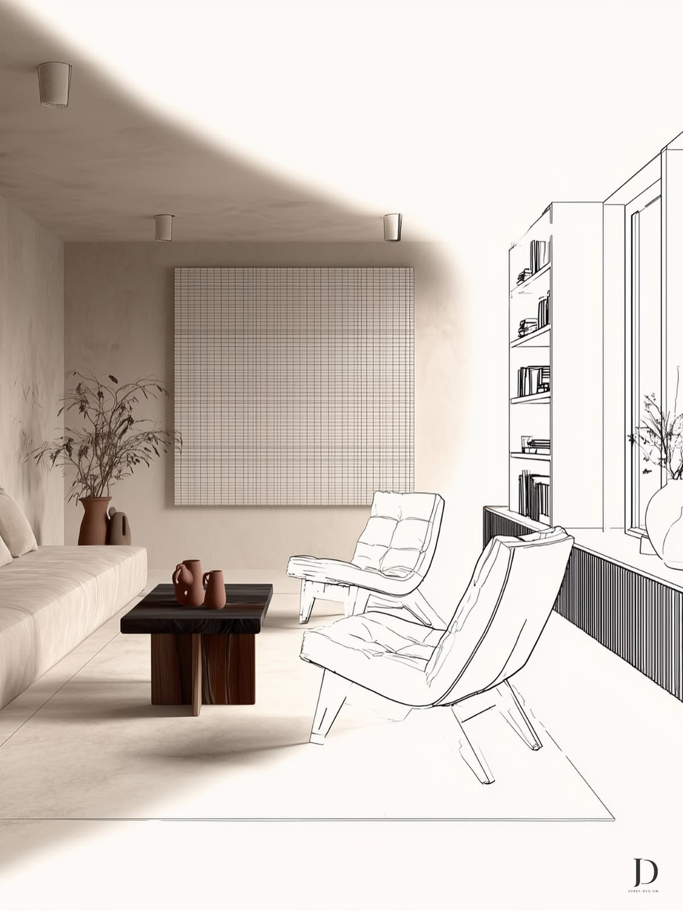
One Place,
Many Different Lives
An exploration of how a single residential spatial framework can adapt to diverse lifestyles while preserving coherence, identity, and architectural integrity.
View Project →“Designing spaces around the lives they hold.”
I am an interior design student at Indus University, Ahmedabad, with a focused interest in interior architecture, residential interiors, and the relationship between space and human experience. My work is driven by research, concept clarity, and a commitment to designing spaces that feel as considered as they look.

An exploration of how a single residential spatial framework can adapt to diverse lifestyles while preserving coherence, identity, and architectural integrity.
View Project →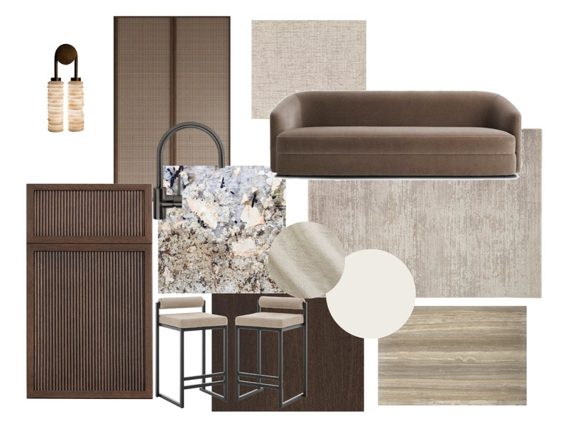
An analytical case study examining the MIMA modular house, its grid system, adaptability, and spatial efficiency as a precedent for flexible residential design.
View Study →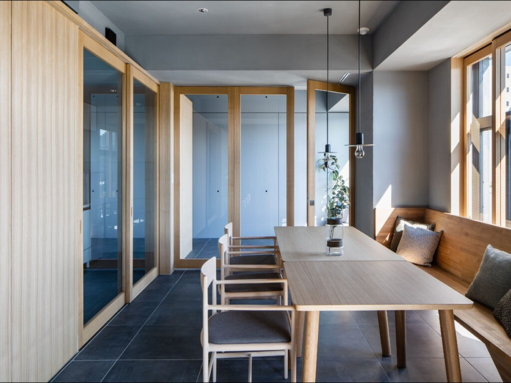
A study of the NEXT21 experimental housing project in Osaka, exploring linked modular living and lifestyle diversity within a collective framework.
View Study →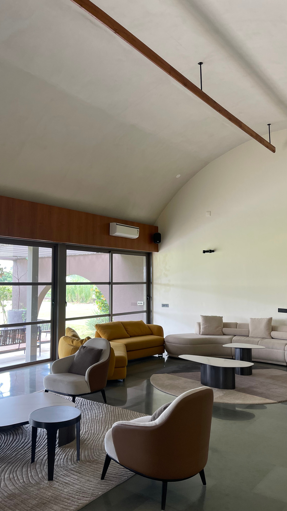
A residential interior project focused on spatial planning, materiality, and creating a home environment that responds to its inhabitants' daily lives.
View Project →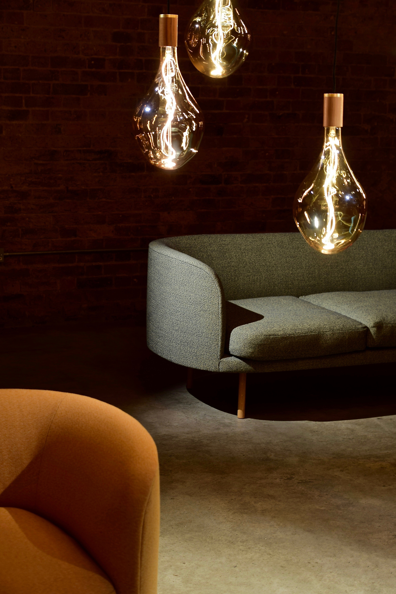
An experimental spatial design project exploring how abstract ideas can be translated into architectural propositions that are both rigorous and habitable.
View Project →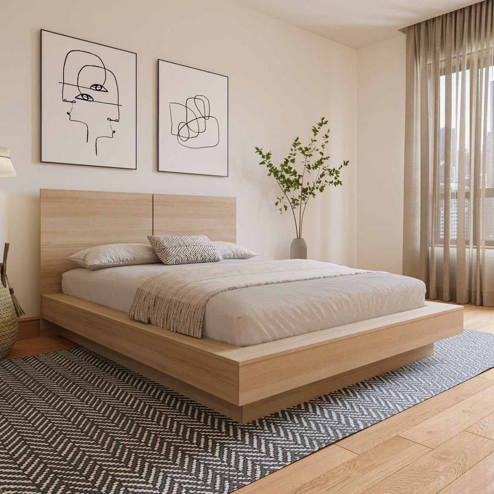
A curated selection of studio projects completed at Indus University, spanning spatial analysis, design methodology, material explorations, and conceptual investigations.
View Archive →The central inquiry of this thesis is this: can a single residential room — defined by a consistent spatial grid and architectural framework — genuinely accommodate the full breadth of human lifestyles? And if so, what are the principles that make such accommodation possible without the space losing its identity?
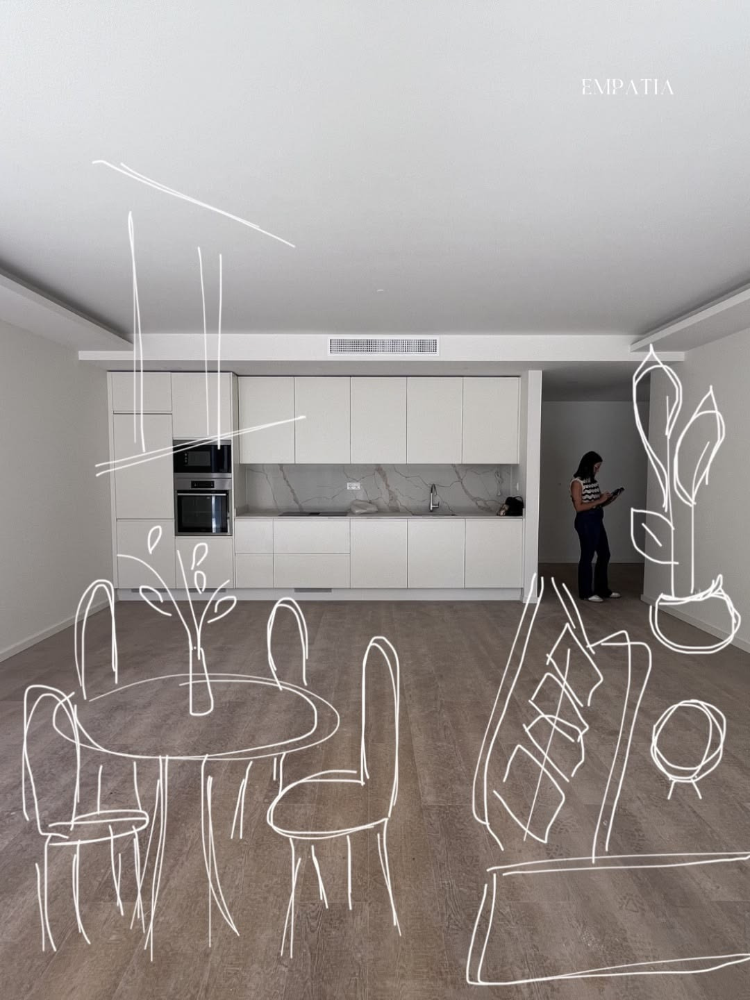
To investigate and demonstrate how a single, fixed spatial grid within a residential unit can be thoughtfully adapted to serve fundamentally different lifestyles and users — through considered spatial planning, material choice, and programmatic flexibility — without fundamentally altering the architectural shell.
Five distinct lifestyle scenarios were developed, each representing a different relationship to space, daily routine, and residential needs.
A single occupant maximising a minimal footprint. Prioritises efficiency, multi-functionality, and spatial ingenuity over decoration or scale.
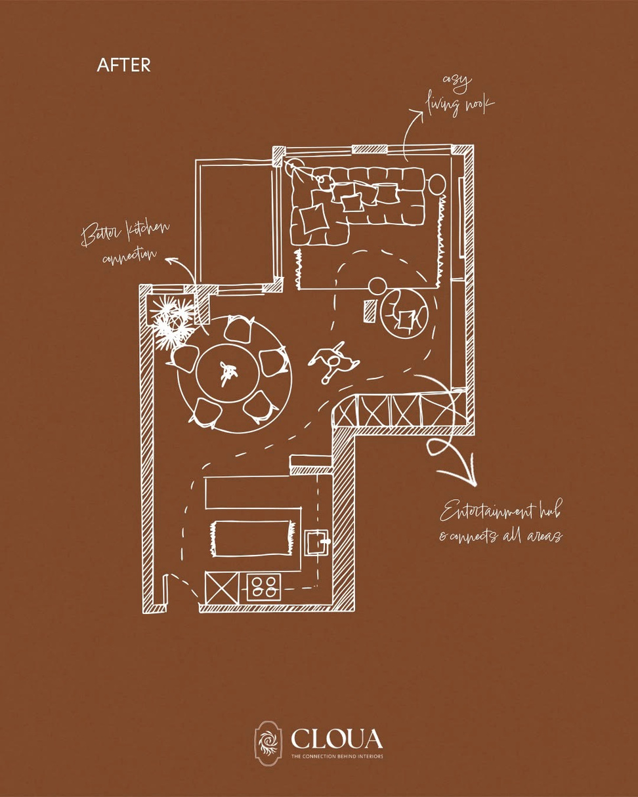
A family unit requiring flexibility between private and shared zones, storage, and a home that can grow with its occupants through different life stages.
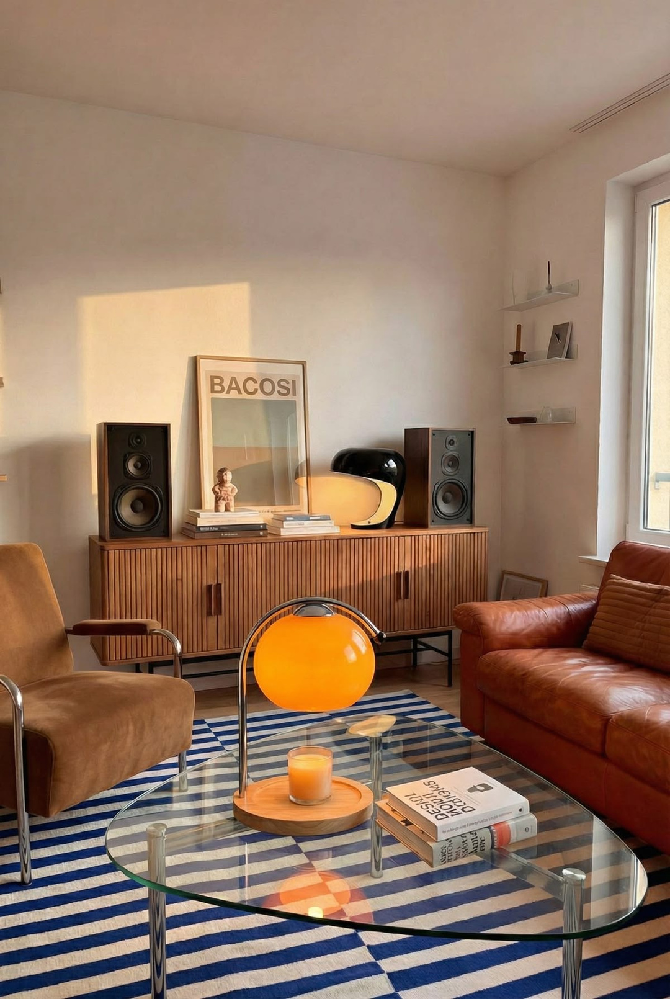
Two professionals needing home-office integration, clear spatial zoning between work and rest, and an environment that supports independent routines.
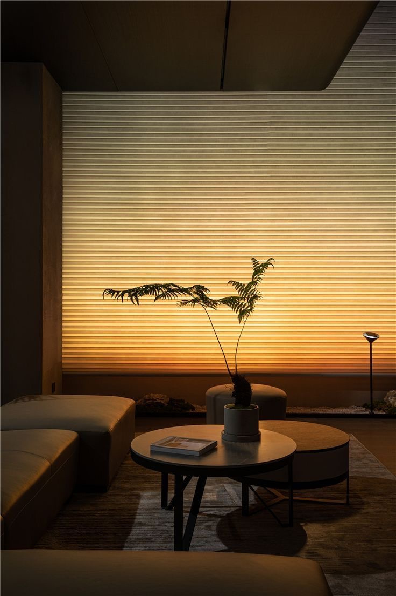
A contemporary urban resident oriented around social living, open plan flexibility, and spaces designed as much for experience as for function.
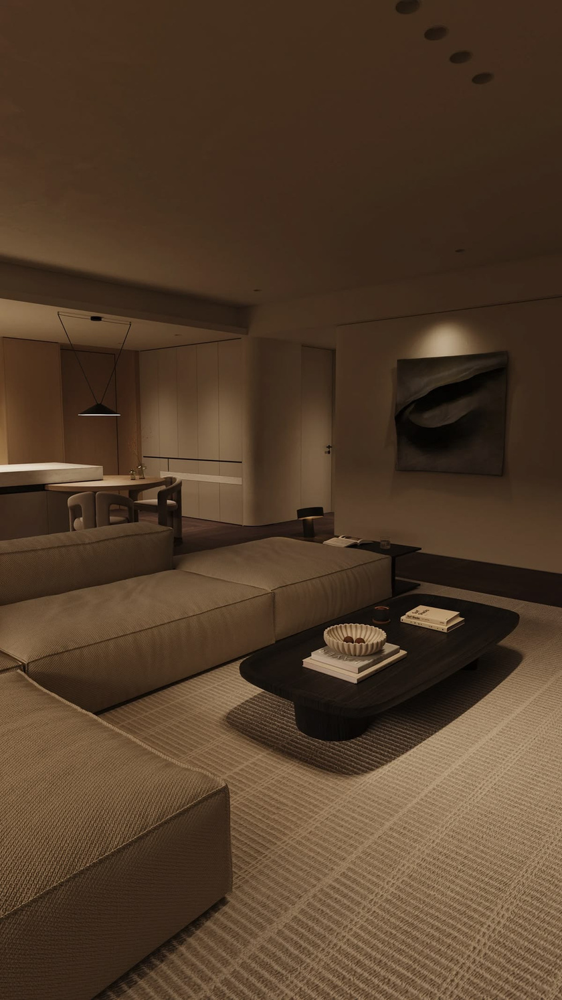
A premium residential interpretation prioritising material quality, spatial generosity, bespoke detailing, and an atmosphere of calm authority within the same physical envelope.
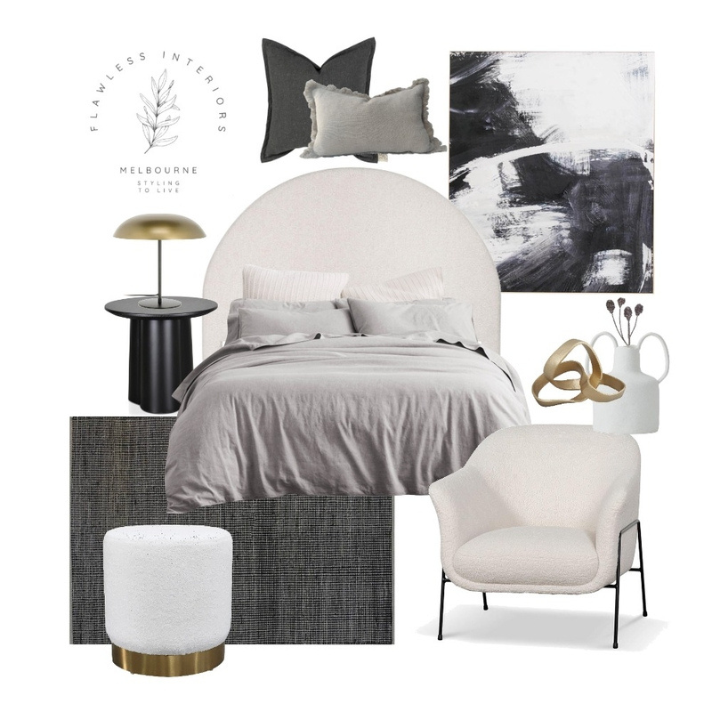
Review of international precedents, academic literature on flexible housing, and case studies in adaptable residential design.
Establishing the fixed spatial grid — the constant architectural parameter within which all lifestyle scenarios operate.
Defining the five lifestyle scenarios through qualitative research, behavioural mapping, and spatial needs analysis.
Iterative spatial planning for each user profile — testing, refining, and resolving each scenario as a complete interior design proposition.
Cross-reading all five scenarios to extract the principles of adaptability that transcend individual lifestyles.
Architectural drawings, spatial sections, plans, mood boards, and material palettes for each scenario presented as a complete thesis document.
Two architectural projects were selected as primary case studies for their direct relevance to the thesis inquiry — each offering a different model of adaptable residential design.
The design development process involved multiple iterations for each lifestyle scenario. Sketches, spatial diagrams, and plan variations were tested against the established grid before resolving each design into a final proposition.
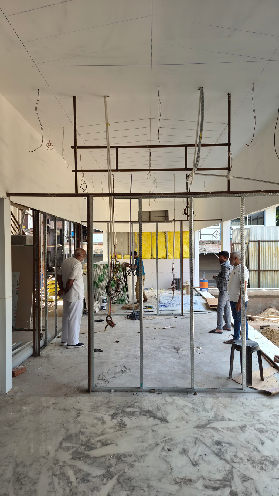
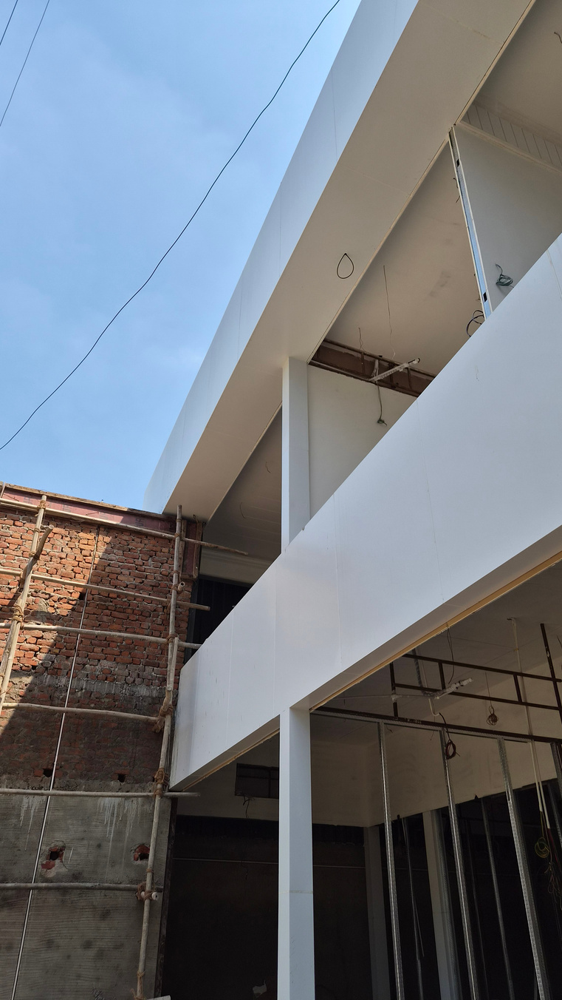
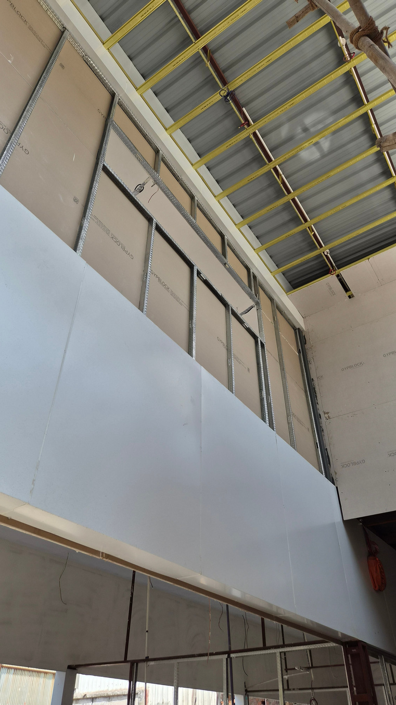
The spatial transformation diagrams illustrate how the same fixed grid and structural shell absorbs fundamentally different interior configurations, demonstrating that the container remains consistent while the inhabited experience shifts substantially.
01 · Compact Living
02 · Family Living
03 · Working Couple
04 · Modern Lifestyle
05 · Luxury / Presidential
The thesis concludes that spatial adaptability in residential interiors is not a question of a building’s technical flexibility alone — it is fundamentally a design attitude. A well-resolved spatial grid, a considered material language, and a deep understanding of how people actually inhabit space together create the conditions within which a single place can genuinely sustain many different lives.
Designed by MIMA Architects (Mário Sousa and Marta Brandão), MIMA House is an internationally celebrated prefabricated dwelling exploring modular flexibility, high architectural quality, and rapid assembly based on classical Japanese proportions.
The concept references traditional Japanese architecture and the tatami modular system, achieving maximal spatial freedom through a disciplined 1.5m × 1.5m post-and-beam chassis that empowers inhabitants to reconfigure partition screens effortlessly.
Spaces are organized around a rational, non-hierarchical layout where perimeter glazed walls connect seamlessly to internal demountable wooden and glass screens, creating adaptable day-to-night living zones.
The structural chassis relies on an uncompromising 1.5m regular grid with integrated ceiling tracks, allowing interior partitions to slide or be added/removed in minutes without specialized tools.
Partitions can reconfigure the dwelling from an expansive open-plan studio into a 1-bedroom, 2-bedroom, or working retreat, verifying that spatial adaptability resides in precision joinery and structural discipline.
Lightness, clean material tectonics (pale oak, glass, and neutral panels), and rigorous dimensional standardization produce spaces that feel spacious and serene despite a compact footprint.
Directly informs the structural and partition logic of "One Place, Many Different Lives", demonstrating how standard spatial bays can accommodate radically divergent lifestyles without structural remodeling.
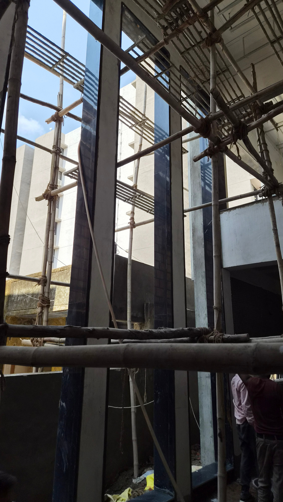
Constructed in Osaka, Japan by the NEXT21 Construction Committee and Osaka Gas, NEXT21 is a pioneering experimental collective housing complex testing long-term urban sustainability and Open Building methodologies.
Based on John Habraken's Open Building theory, NEXT21 establishes a strict division between "Skeleton" (communal durable structural concrete frame designed to last 100+ years) and "Infill" (interior fit-out customized to individual occupant desires and lifespans).
Each residential unit showcases an entirely bespoke interior layout—from multi-generational living quarters to home offices and garden terraces—operating independently within the common structural envelope.
Employs a standardized 3D concrete grid frame accompanied by accessible raised floor systems and horizontal piping ducts, allowing drainage and cabling to reroute freely without puncturing structural slabs.
Units have been redesigned and remodeled across decades to reflect evolving Japanese family structures, proving that residential interiors can transform continually while the exterior infrastructure remains permanent.
Autonomy of the interior is essential for longevity. When interior partitions and services decouple from the structural skeleton, human domestic life achieves genuine self-determination.
Serves as the theoretical cornerstone for the thesis spatial methodology, providing the framework for how five divergent lifestyles can inhabit a single constant residential bay without spatial compromise.
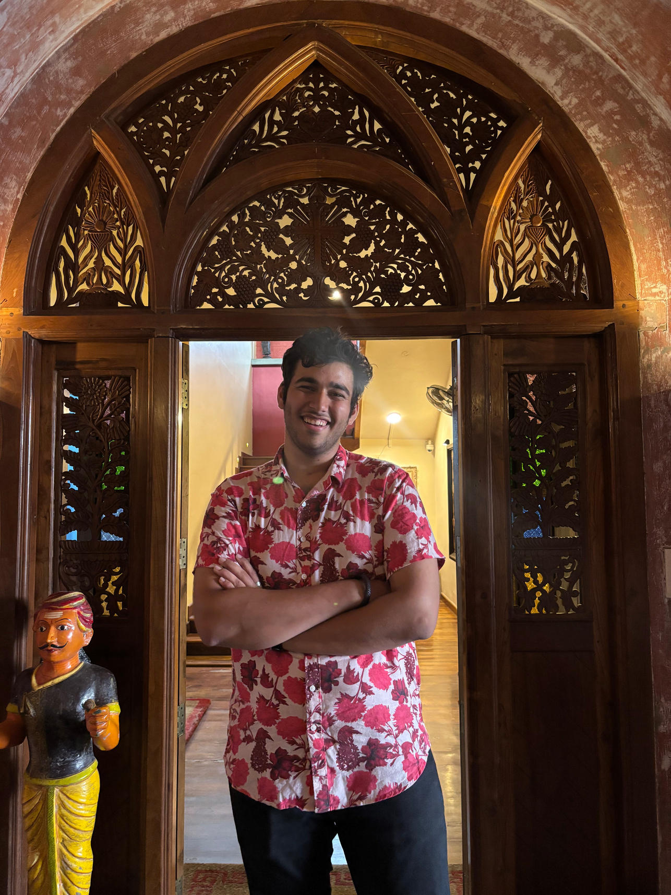
I am currently pursuing interior design at Indus University, Ahmedabad, where my work is centred on interior architecture, residential design, and the ways in which space can be made to feel genuinely responsive to human life.
My approach to design is research-driven and methodical. I am interested in the relationship between spatial planning and the lived experience of a room — how proportion, materiality, light, and circulation together shape how a person feels within a space, not just how they navigate it.
I am drawn to projects that require both analytical rigour and spatial intuition — thesis research, case study analysis, and design development work that begins with a clear question and builds toward a considered, resolved answer.
I believe that the best interior design is invisible in its craft but deeply felt in its effect — spaces that hold their occupants well, without announcing themselves.
Every project begins with a question. The process that follows is methodical, iterative, and always focused on arriving at a spatial proposition that is both rigorously considered and genuinely liveable.
Building a foundation of knowledge — studying precedents, gathering references, understanding context, and asking the right questions before design begins.
Reading the gathered information critically — identifying patterns, spatial principles, and the design parameters that will inform the work.
Defining the central idea — the organising principle that will give the project its coherence, direction, and design identity.
Translating concept into spatial decisions — plans, sections, elevations, and material proposals tested against the brief and the lived reality of the space.
Testing the limits of the design — alternate configurations, material explorations, and spatial variations that push the work further before resolution.
A resolved, fully considered spatial proposition — complete with drawings, visualisations, and the documentation needed to communicate the design with clarity.
I am open to conversations about design, collaboration, and opportunities. Whether you are a fellow designer, a studio, or a graduate programme — I would be glad to hear from you.